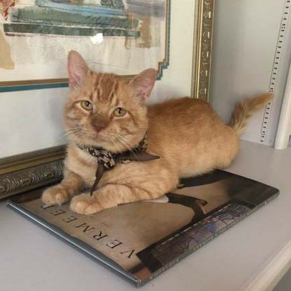
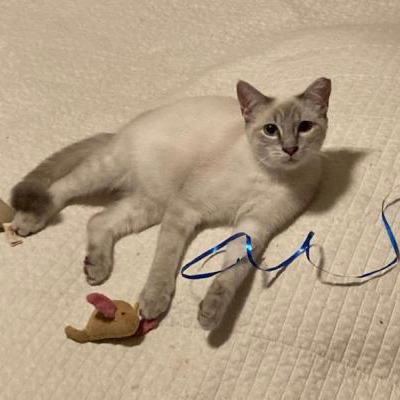

Cloud is a large adult male Domestic Short Hair mix available through San Antonio Feral Cat Coalition. Cloud is neutered, microchipped and is up to date on vaccinations. Click below to visit sanantonioferalcats.org for more information and email adoptions@sanantonioferalcats.org to adopt.

Milo
An orange male Tabby, who is approximately 5 years old. Milo is a big, gentle sweet and loving guy who likes to sit or lay around taking naps on every place he finds comfortable, neck and belly rubs are his favorite. Milo is FIV+ which is not easily transmitted between cats. Milo is good with children. Vaccinations are up to date, he is microchipped and neutered. Click below to visit sanantonioferalcats.org for more information and email adoptions@sanantonioferalcats.org to adopt.

Gage
Gage is a young siamese male who is up to date on vaccinations, microchipped and neutered. Click below to visit sanantonioferalcats.org for more information and email adoptions@sanantonioferalcats.org to adopt.
April
April is a large 2 yr old male Tabby mix. April is great with other cats, dogs, and children. April is a sweet and active guy who loves getting rubs and attention. If you are interested contact Lorraine at 210-471-8462. Email: crazykattlady67@gmail.com. April's adoption fee is 100.00 which includes neuter, rabies shot, fvrcp shot, and microchip. Click below to visit www.sanantonioferalcats.org to download and print an adoption application.